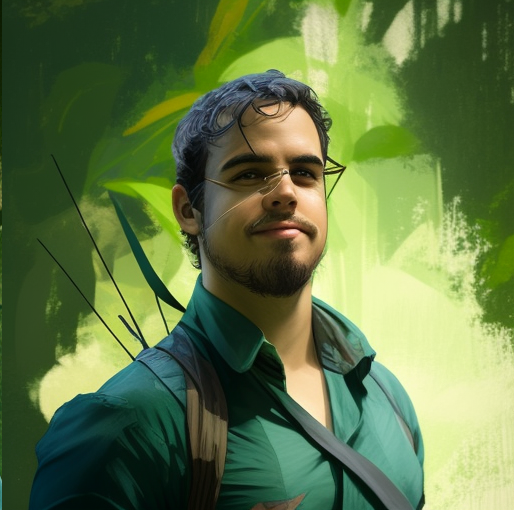
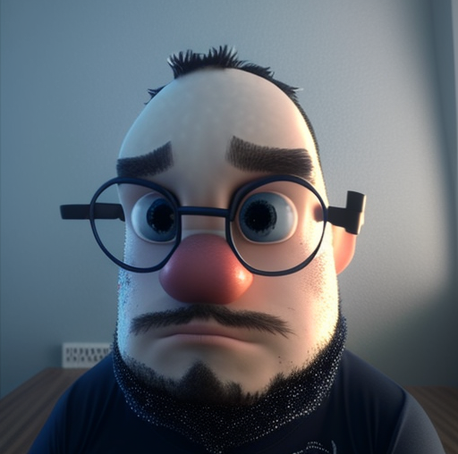
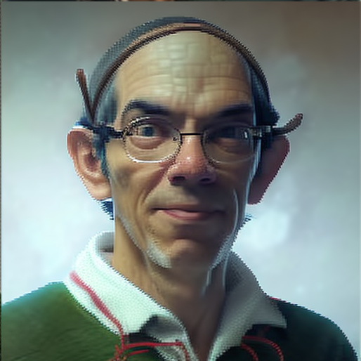

Nós oferecemos uma formação completa e atualizada em tecnologia da informação, englobando desde as bases teóricas até as mais modernas ferramentas e tendências do mercado. Além disso, contamos com uma equipe de professores altamente capacitados e experientes, que se dedicam a compartilhar seu conhecimento e inspirar seus alunos.
Se você é um estudante interessado em se tornar um professor de computação, convidamos você a conhecer um pouco mais sobre os nossos professores atuantes:
-
Claudio Andrés Callejas Olguín
Ok, pessoal, preparem-se para conhecer um verdadeiro "senhor das ciências da computação"! Nosso amigo aqui tem uma graduação em Ingeniería de Ejecución en Computación e Informática pela Universidad Mayor (Chile, 2010), mas como se isso não bastasse, ele também revalidou como Bacharelado em Ciência da Computação pela Universidade Federal do Rio Grande do Norte (2013). Aí ele pensou: "Hmm, acho que ainda posso aprender mais um pouco" e fez um mestrado em Sistemas e Computação pela mesma universidade (2012) e um doutorado em Ciência da Computação também pela Universidade Federal do Rio Grande do Norte (2016). Uau, eu já estou cansado só de falar tudo isso!
E não é só isso, pessoal! Ele agora é professor adjunto C3 da Universidade Federal Rural do Semi-Árido. E o que ele faz lá? Ele é especialista em Ciência da Computação, com foco em Teoria da Computação e Lógica. Isso mesmo, ele é aquele tipo de pessoa que consegue explicar como os computadores funcionam de um jeito que até uma criança entenderia. E se você acha que acabou, ainda tem mais: ele também atua com computabilidade, teoria dos domínios e lógica fuzzy. Eu não sei o que é tudo isso, mas parece coisa de outro planeta!
Então é isso, pessoal, agora vocês conhecem uma verdadeira lenda das ciências da computação. Se eu precisasse de ajuda para consertar meu computador, já sei quem chamar! -

Leandro de Almeida Melo
E aí, pessoal! Hoje vamos falar sobre um verdadeiro mestre da Computação, o Professor Adjunto no Departamento de Engenharias e Tecnologia da UFERSA!
Esse cara é tão fera que já foi professor na UEPB e no IFPB, ensinando Ciência e Engenharia da Computação! Ele é doutor e mestre em Sistemas e Computação pela UFRN e graduado em Licenciatura em Ciência da Computação pela UFPB! É muita formação, hein?!
E as áreas de interesse dele? São várias! Ele manja de engenharia de software, engenharia de requisitos, UML, CSCW, ensino de programação, informática na educação, fatores humanos da Computação e algoritmos! É ou não é um verdadeiro ninja da Computação?
Então se você quer saber mais sobre programação, engenharia de software ou qualquer outro assunto relacionado à Computação, é só procurar esse professor top da UFERSA! Ele é um verdadeiro mestre Jedi do mundo da tecnologia! -
Pedro Thiago Valério de Souza
Pensa numa pessoa que é mestre em Engenharia Elétrica e Computação e tem um doutorado nessa mesma área! É ele mesmo! Além disso, é professor Assistente II e atua nas áreas de Processamento Digital de Sinais, Sistemas de Comunicações Digitais, Sistemas Digitais e Computação Evolucionária. Uau! Já pensou em ter aula com esse cara? Acho que eu ia acabar fazendo perguntas sobre como transformar água em vinho com ajuda da computação! 😂
-

Vinícius Samuel Valério de Souza
Vinícius Samuel Valério de Souza é um engenheiro de computação que sabe tudo de bits e bytes! Com graduação na UFRN e mestrado e doutorado pelo PPGEEC da mesma instituição, ele é um verdadeiro mestre da Engenharia Elétrica e de Computação. Agora, como professor do DETEC do CMPF da UFERSA, ele ensina tudo o que sabe sobre computação e tecnologia para a próxima geração de nerds. Se você tem um problema tecnológico, Vinícius é o cara que vai te ajudar!
-

Walber José Adriano Silva
Bem-vindo ao currículo incrível de um especialista em computação! Esse rapaz tem mais conhecimento em redes de computadores do que o Mark Zuckerberg! Ele se formou na Universidade Federal da Paraíba, fez mestrado na mesma universidade e até conseguiu um doutorado na Universidade Federal de Pernambuco. É tão inteligente que, se a Matrix for real, ele já deve ter hackeado ela. E olha só, ele é um Educador certificado AWS e Ponto Central de Contato do programa AWS Academy na Universidade Federal Rural do Semi-Árido! Com certeza, ele é o tipo de pessoa que prefere viver na nuvem do que no mundo real.